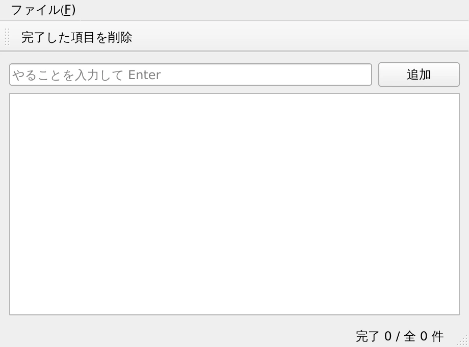
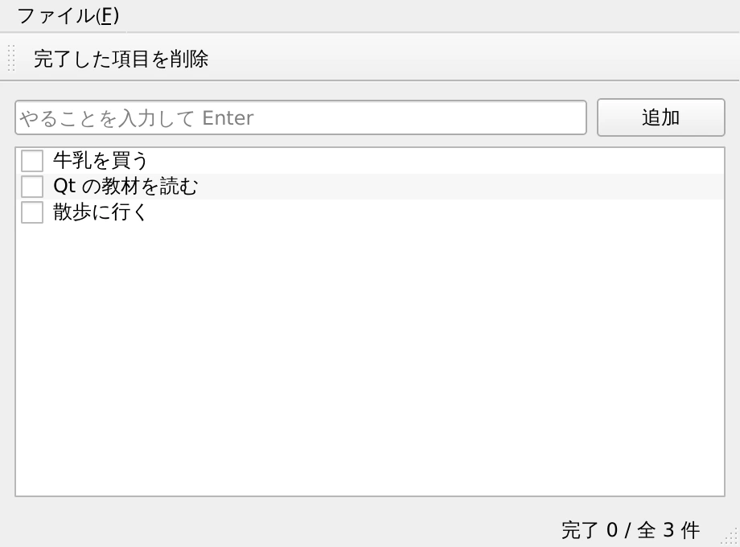

第 12 章·読了目安 20 分
第12章 実践 — ToDo アプリを 1 本作る
ここまでの全部入り。保存機能つきの ToDo アプリを、設計の考え方から順に組み上げて完成させます。
最後は総仕上げです。ここまで学んだものを全部使って、 実際に使える ToDo アプリを 1 本作ります。
要件はこうします。
- やることを入力して追加できる
- チェックを付けて「完了」にできる
- 完了した項目をまとめて削除できる（確認つき）
- いま何件中何件終わったかが常に見える
- 閉じても内容が残る（次に開いたら復元される）
作る前に、役割を分ける
いきなりコードを書き始めると、あとで手が付けられなくなります。 先に「何を誰が担当するか」を決めます。
| 担当 | やること | 使う知識 |
|---|---|---|
TodoWindow | 画面の組み立て、操作の受け取り | 第 4・6・8 章 |
TodoModel | データの保持と出し入れ | 第 10 章 |
save_path() / load() / save() | ファイルへの保存と復元 | この章 |
完成したコード
"""実践 — 保存できる ToDo アプリ。この教材で扱ったものが一通り入っている。 QMainWindow / レイアウト / シグナルとスロット / 自作モデル / ダイアログ / メニューとツールバー / ステータスバー / 終了時の保存実行: python ch12_todo_app.py"""from __future__ import annotationsimport jsonimport sysfrom pathlib import Pathfrom PySide6.QtCore import (QAbstractListModel, QModelIndex, QStandardPaths, Qt, Signal)from PySide6.QtGui import QAction, QKeySequencefrom PySide6.QtWidgets import (QApplication, QHBoxLayout, QLabel, QLineEdit, QListView, QMainWindow, QMessageBox, QPushButton, QVBoxLayout, QWidget)def save_path() -> Path: """OS ごとの「アプリがデータを置いてよい場所」を Qt に聞く。""" base = QStandardPaths.writableLocation( QStandardPaths.StandardLocation.AppDataLocation) folder = Path(base) / "qt6-widgets-todo" folder.mkdir(parents=True, exist_ok=True) return folder / "todo.json"class TodoModel(QAbstractListModel): """[{"text": ..., "done": bool}, ...] を、チェック付きリストとして見せる。""" changed = Signal() # 件数表示を更新してもらうための自作シグナル def __init__(self, items: list[dict] | None = None): super().__init__() self._items = items or [] # --- ビューから聞かれること ------------------------------------------ def rowCount(self, parent=QModelIndex()) -> int: return len(self._items) def data(self, index: QModelIndex, role=Qt.ItemDataRole.DisplayRole): if not index.isValid(): return None item = self._items[index.row()] if role == Qt.ItemDataRole.DisplayRole: return item["text"] if role == Qt.ItemDataRole.CheckStateRole: return Qt.CheckState.Checked if item["done"] else Qt.CheckState.Unchecked return None def flags(self, index: QModelIndex) -> Qt.ItemFlag: """チェックできる・選べる、という「この項目にできること」を宣言する。""" if not index.isValid(): return Qt.ItemFlag.NoItemFlags return (Qt.ItemFlag.ItemIsEnabled | Qt.ItemFlag.ItemIsSelectable | Qt.ItemFlag.ItemIsUserCheckable) def setData(self, index: QModelIndex, value, role=Qt.ItemDataRole.EditRole) -> bool: """ビュー側での操作（チェックの付け外し）を受け取る。""" if role != Qt.ItemDataRole.CheckStateRole or not index.isValid(): return False # ここに渡ってくる value は int（Checked なら 2）。 # Qt.CheckState() で包み直してから比較する。 self._items[index.row()]["done"] = ( Qt.CheckState(value) == Qt.CheckState.Checked) # 「ここが変わった」とビューに知らせる。これを忘れると画面が更新されない。 self.dataChanged.emit(index, index, [role]) self.changed.emit() return True # --- アプリ側から呼ぶ操作 -------------------------------------------- def add(self, text: str) -> None: # 行の増減は begin... / end... で挟む決まり。挟まないと表示が壊れる。 row = len(self._items) self.beginInsertRows(QModelIndex(), row, row) self._items.append({"text": text, "done": False}) self.endInsertRows() self.changed.emit() def remove_done(self) -> int: remaining = [i for i in self._items if not i["done"]] removed = len(self._items) - len(remaining) if removed: self.beginResetModel() # 全面的に作り替えるときはこれ self._items = remaining self.endResetModel() self.changed.emit() return removed def counts(self) -> tuple[int, int]: return sum(1 for i in self._items if i["done"]), len(self._items) def to_list(self) -> list[dict]: return self._itemsclass TodoWindow(QMainWindow): def __init__(self): super().__init__() self.setWindowTitle("やることリスト") self.resize(460, 340) self.model = TodoModel(self.load()) self.model.changed.connect(self.update_status) # --- 中央: 入力欄 + 一覧 ------------------------------------------ central = QWidget() outer = QVBoxLayout(central) self.input = QLineEdit() self.input.setObjectName("inputEdit") self.input.setPlaceholderText("やることを入力して Enter") self.input.returnPressed.connect(self.add_item) add_button = QPushButton("追加") add_button.setObjectName("addButton") add_button.clicked.connect(self.add_item) row = QHBoxLayout() row.addWidget(self.input, 1) row.addWidget(add_button) outer.addLayout(row) self.view = QListView() self.view.setModel(self.model) self.view.setAlternatingRowColors(True) outer.addWidget(self.view, 1) self.setCentralWidget(central) # --- 操作の定義 ---------------------------------------------------- clear_action = QAction("完了した項目を削除", self) clear_action.setObjectName("clearAction") clear_action.triggered.connect(self.clear_done) save_action = QAction("保存", self) save_action.setShortcut(QKeySequence.StandardKey.Save) save_action.triggered.connect(self.save) quit_action = QAction("終了", self) quit_action.setShortcut(QKeySequence.StandardKey.Quit) quit_action.triggered.connect(self.close) menu = self.menuBar().addMenu("ファイル(&F)") menu.addAction(save_action) menu.addAction(clear_action) menu.addSeparator() menu.addAction(quit_action) toolbar = self.addToolBar("操作") toolbar.addAction(clear_action) # --- ステータスバー ------------------------------------------------- self.counter = QLabel() self.statusBar().addPermanentWidget(self.counter) self.update_status() # --- 動作 --------------------------------------------------------------- def add_item(self): text = self.input.text().strip() if not text: return self.model.add(text) self.input.clear() def clear_done(self): done, _ = self.model.counts() if not done: QMessageBox.information(self, "やることリスト", "完了済みの項目はありません。") return answer = QMessageBox.question( self, "確認", f"完了済みの {done} 件を削除します。よろしいですか？") if answer == QMessageBox.StandardButton.Yes: removed = self.model.remove_done() self.statusBar().showMessage(f"{removed} 件を削除しました", 3000) def update_status(self): done, total = self.model.counts() self.counter.setText(f"完了 {done} / 全 {total} 件") # --- 保存と読み込み ----------------------------------------------------- def load(self) -> list[dict]: path = save_path() if not path.exists(): return [] try: return json.loads(path.read_text(encoding="utf-8")) except (OSError, ValueError): return [] # 壊れていても起動できなくならないようにする def save(self): save_path().write_text( json.dumps(self.model.to_list(), ensure_ascii=False, indent=2), encoding="utf-8") self.statusBar().showMessage("保存しました", 2000) def closeEvent(self, event): """閉じる直前に呼ばれる。ここで保存しておけば取りこぼしがない。""" self.save() super().closeEvent(event)app = QApplication(sys.argv)window = TodoWindow()window.show()sys.exit(app.exec())

要点を順に見ていく
チェックボックス付きのリストにする
QListView にチェックボックスを出すために、モデル側で 3 つのことをしています。
| メソッド | やっていること |
|---|---|
data() |
CheckStateRole で聞かれたら、チェック状態を返す |
flags() |
ItemIsUserCheckable を返して「チェックできる」と宣言する |
setData() |
ユーザーがチェックを変えたとき、それをデータに反映する |
この 3 つが揃って初めて、チェックが「見える」かつ「押せる」かつ「保存される」ようになります。
data() では Qt.CheckState.Checked をそのまま返して構いません。
ところが setData() に渡ってくる value は
Enum ではなく int（Checked なら 2）です。
# ✗ int と Enum を比べているので、いつまでも Falseself._items[index.row()]["done"] = (value == Qt.CheckState.Checked)# ○ いったん Qt.CheckState() で包み直してから比べるself._items[index.row()]["done"] = (Qt.CheckState(value) == Qt.CheckState.Checked)エラーは出ず、ただ「チェックしても完了にならない」という形で現れるので厄介です。
.value は、いまは不要
data() の戻り値に .value を付けている記事がありますが、
このページのバージョンで確認したところ、
Enum のまま返しても .value を付けても表示は同じでした。
初期の PySide6 で列挙型の扱いが安定していなかった名残です。
行の追加・削除は「挟む」
def add(self, text): row = len(self._items) self.beginInsertRows(QModelIndex(), row, row) # ★ 前 self._items.append({"text": text, "done": False}) self.endInsertRows() # ★ 後
リストに append するだけでは、ビューは行が増えたことを知りません。
必ず beginInsertRows() / endInsertRows() で挟みます。
まとめて作り替えるときは beginResetModel() / endResetModel() です。
自作シグナルで件数表示を更新する
class TodoModel(QAbstractListModel): changed = Signal() # 「中身が変わった」を知らせる自作シグナルモデルが直接ステータスバーを触ることもできますが、それでは 「モデルが画面を知っている」ことになり、切り分けが崩れます。 モデルは「変わった」と叫ぶだけにして、 それを聞いたウィンドウ側が表示を更新します。
self.model.changed.connect(self.update_status)保存先は自分で決めず、Qt に聞く
base = QStandardPaths.writableLocation( QStandardPaths.StandardLocation.AppDataLocation)
「アプリがデータを置いてよい場所」は OS ごとに違います。
自分でパスを書くと、環境によって書き込めずに落ちます。
QStandardPaths に聞けば、適切な場所を返してくれます。
| OS | AppDataLocation の例 |
|---|---|
| Windows | C:\Users\名前\AppData\Roaming\… |
| macOS | ~/Library/Application Support/… |
| Linux | ~/.local/share/… |
終了時に確実に保存する
def closeEvent(self, event): self.save() super().closeEvent(event)
closeEvent はウィンドウが閉じられる直前に必ず呼ばれます。
ここで保存しておけば、保存ボタンを押し忘れても内容が残ります。
load() の中で例外を握りつぶして空リストを返しているのは、
保存ファイルが壊れていてもアプリが起動しなくならないようにするためです。
「起動できないアプリ」は、データが少し失われるよりずっと困ります。
ここから先の育て方
できあがったものに、次のような機能を足していけます。難易度順に並べてあります。
| 機能 | 使う知識 |
|---|---|
| 項目をダブルクリックで編集できるようにする | flags() に ItemIsEditable を足す（第 10 章） |
| 完了した項目に取り消し線を引く | data() で FontRole に答える（第 10 章） |
| 検索欄で絞り込む | QSortFilterProxyModel（第 10 章） |
| ダークテーマに対応する | QPalette（第 11 章） |
| 期限を持たせて並べ替える | QDateEdit ＋ ソート（第 5・10 章） |
| ウィンドウの位置を記憶する | QSettings（第 6 章） |
まずは「完了した項目に取り消し線を引く」から挑戦してみてください。
TodoModel.data() に次を足すだけです。
from PySide6.QtGui import QFont# data() の中に追加if role == Qt.ItemDataRole.FontRole and item["done"]: font = QFont() font.setStrikeOut(True) return font
チェックを付けた瞬間に取り消し線が付くはずです。
もし付かなければ、setData() の dataChanged.emit() を確認してください。
この章のまとめ
- 作る前に「画面 / データ / 保存」の担当を分けておくと、後から機能を足しやすい。
- チェック付きリストは
data()/flags()/setData()の 3 点セット。 - 行の増減は
begin…/end…で必ず挟む。 - モデルは「変わった」と叫ぶだけ。画面の更新は聞いた側の仕事。
- 保存先は
QStandardPathsに聞き、closeEventで確実に書く。